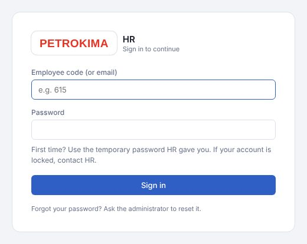
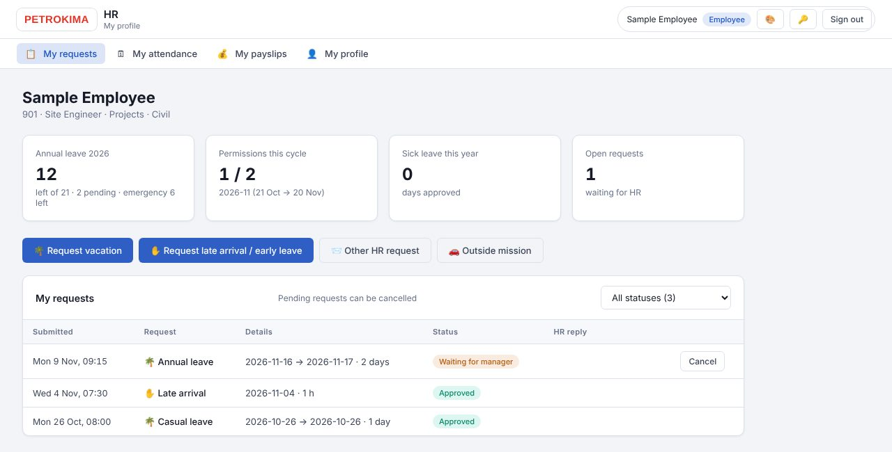
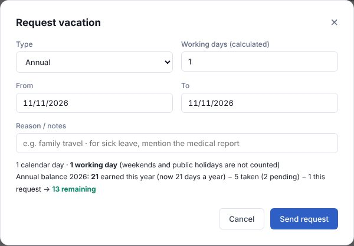
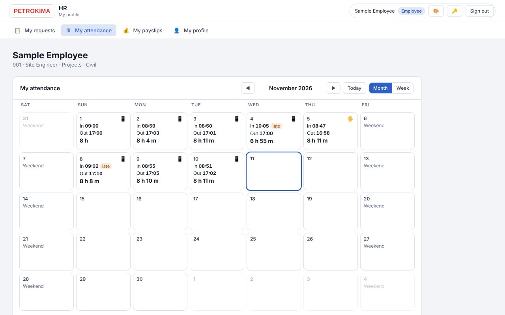
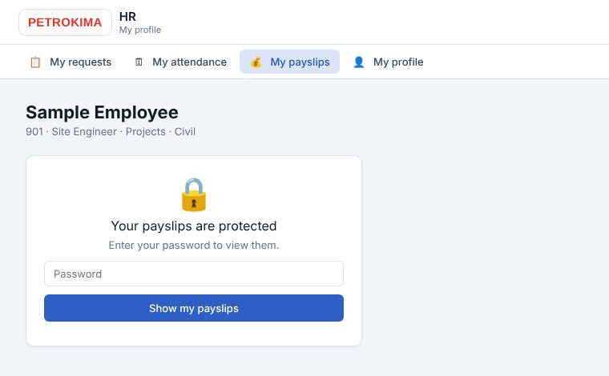
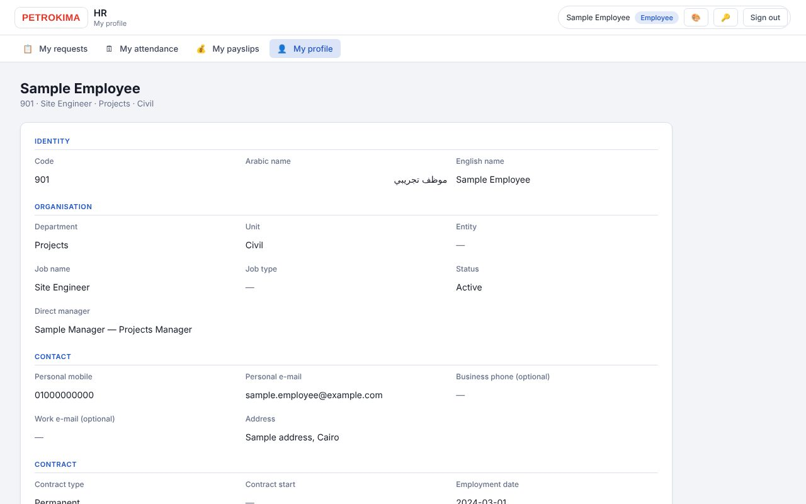

فترة تجريبية
التطبيق الآن في فترة تجريبية. استمر في استخدام النظام الحالي كالمعتاد (البصمة والإجراءات الحالية) إلى جانب التطبيق الجديد، حتى تُعلن إدارة الموارد البشرية غير ذلك.
١ الدخول من الكمبيوتر
- افتح hr.petrokima-hr.com في Chrome أو Edge أو Firefox.
- اكتب كود الموظف وكلمة المرور (نفس حساب الهاتف) ثم اضغط Sign in. أول مرة؟ استخدم كلمة المرور المؤقتة من الموارد البشرية، ثم أكّد سنة ميلادك واختر كلمة مرور خاصة بك.
- تظهر صفحاتك: My requests وMy attendance وMy payslips وMy profile في القائمة العلوية.

٢ طلباتي — My requests
- في الأعلى: رصيد إجازتك السنوية، والأذونات المستخدمة، والطلبات المفتوحة.
- اختر الطلب: 🌴 Request vacation (إجازة)، Request late arrival / early leave (إذن)، Outside mission (مأمورية) أو Other HR request.
- اكتب التواريخ يوم/شهر/سنة (مثلاً 16112026)، والسبب، ثم اضغط Send request. تعرض النافذة أيام العمل ورصيدك بعد الطلب.
- تابع الحالة في جدول My requests: يذهب الطلب إلى مديرك المباشر ثم الموارد البشرية. زر Cancel يلغي الطلب ما دام في الانتظار.


٣ حضوري — My attendance
- تقويم الشهر: لكل يوم وقت الحضور والانصراف وعدد الساعات. 📱 = من الهاتف، 🖐 = من البصمة، وكلمة late للتأخير.
- الأسهم ◀ ▶ للشهر السابق والتالي، وWeek لعرض الأسبوع مع المشروعات.

٤ مفرداتي وبياناتي — My payslips · My profile
- My payslips: اكتب كلمة المرور مرة أخرى ثم Show my payslips. تُغلق عند مغادرة الصفحة.
- My profile: بياناتك كما هي لدى الموارد البشرية. لتصحيح أي بيان تواصل مع الموارد البشرية، أو حدّث بيانات الاتصال من تطبيق الهاتف.
- أعلى الشاشة: 🎨 لتغيير الألوان، 🔑 لتغيير كلمة المرور، وSign out.
- للمديرين: تظهر لك أيضاً Team approvals لاعتماد طلبات فريقك.


إذا احتجت مساعدة
نسيت كلمة المرور أو الحساب مغلق؟ تواصل مع إدارة الموارد البشرية — أو ردّ على البريد الذي وصلك منها. تسجيل الحضور والانصراف من الهاتف فقط — راجع دليل الهاتف: app.petrokima-hr.com/guide-phone.html
Trial period
The app is in a trial period. Keep using the current system as usual (the fingerprint machine and today's procedures) alongside the new app, until HR announces otherwise.
1 Sign in on a computer
- Open hr.petrokima-hr.com in Chrome, Edge or Firefox.
- Type your employee code and password (the same account as on the phone) and click Sign in. First time? Use the temporary password from HR, then confirm your year of birth and choose your own password.
- Your pages open: My requests, My attendance, My payslips and My profile in the menu at the top.
2 My requests
- At the top: your annual leave balance, permissions used and open requests.
- Choose the request: 🌴 Request vacation, Request late arrival / early leave, Outside mission or Other HR request.
- Type dates as day/month/year (for example 16112026), the reason, then click Send request. The window shows the working days and your balance after the request.
- Follow the status in the My requests table: a request goes to your direct manager, then to HR. Cancel withdraws it while it is waiting.
3 My attendance
- A month calendar: each day shows your check-in, check-out and hours. 📱 = from the phone, 🖐 = from the fingerprint machine, late = a late arrival.
- ◀ ▶ move between months; Week shows the week with your projects.
4 My payslips · My profile
- My payslips: type your password again, then Show my payslips. They lock again when you leave the page.
- My profile: your details as HR has them. To correct something contact HR, or update your contact details in the phone app.
- At the top: 🎨 changes the colours, 🔑 changes your password, and Sign out.
- Managers also see Team approvals to approve their team's requests.
If you need help
Forgot your password or account locked? Contact the HR department — or reply to the e-mail you received from HR. Checking in and out is done on the phone only — see the phone guide: app.petrokima-hr.com/guide-phone.html